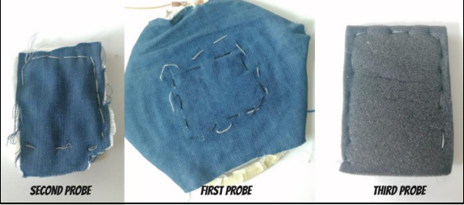
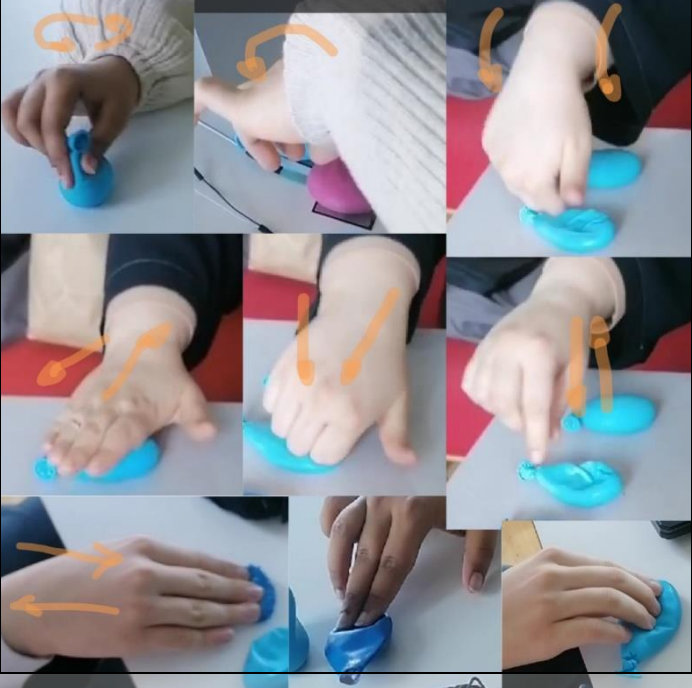
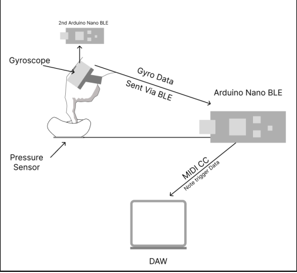
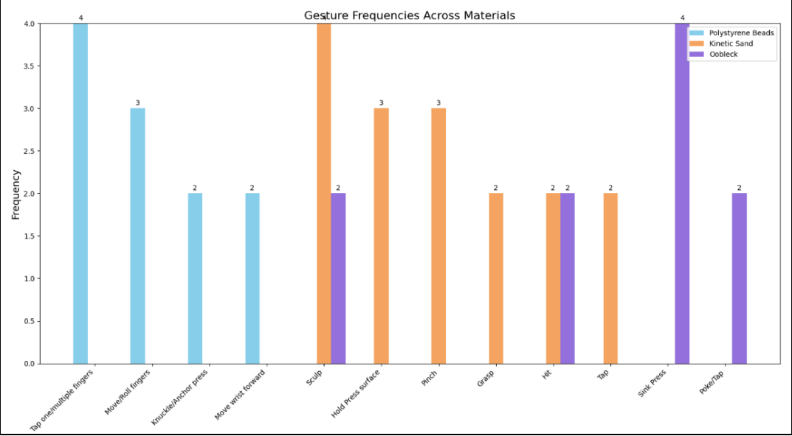
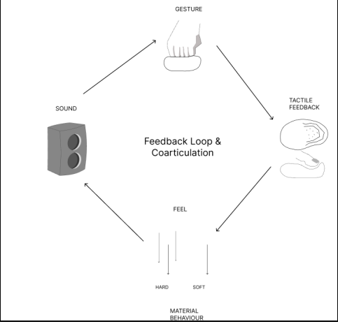

Tangible Feedback in DMI
Exploration of Interactive Deformable Materials for Nuanced Play
Type: RtD Project
Role: Development, Interface Design, Research, Sketching, Prototyping
Team: Individual
Tools & Libraries: C++, Arduino IDE, ControlSurface.h, 3D Printing, Hardware Integration
Overview
Tangible Feedback in DMI is a material exploration project that seeks to understand the relationship between embodied interaction with materials and sonic feedback in digital musical instruments.
One of the most common issues with digital musical instruments is the lack of tactile feedback, which can lead to a disconnect between the performer and the instrument. This project aims to address this issue by exploring how different materials can provide embodied feedback to the performer, enhancing their perception of the instrument in relation to the sound that is being produced.
Although this is a common issue between music instrument makers, a lot of them would embed tactile feedback mechanisms into their designs to improve the user experience. However, in comperison to its acoustic and electric counterparts, the sonic output is relational and not mechanical, losing the direct connection between the performer and the sound.
This project led into exploring 6 (Textile and dynamic) materials considering their tacticle properties and affordences, embedding 4 sensors throught each iterration (FSR, Gyroscope, Tilt Sensor, Accelerometer). The final concept used 6 inputs (Force Sensor Resistors) with a palm Accelerometer module both affecting two MIDI CC outputs, resulting in different responses in relation to user's gestures onto the materials.


Demo Video Example
Do you want to know more?
Design Process & Methods
The methods for this studio project were based on Research through Design, where the exploration of materials become the vehicles of inquire, probing each sensor and material to formulate new hypotheses and insights in relation to its affordances. Interviews and observations were conducted to formulate and identify phenomena and contextualize user's experiences with each probe.
This was particularly done to re-iterate the possible implementations of the sensors with each probe available.
This design process had the goal to understand how we approach the user's possible behaviors and interactions with the instrument, resulting in different setups and configurations, as well as different opportunities revealed through participatory observations and interviews.
Conceptual Details
The final concept resulted in visual signifiers representing suggestions and already documented actions by the user. The brown leaves or the snow flakes represent the state of the plant, measured by the sensors of the device reading the light, temperature and humidity of the local environment.
Technologies Used
The prototypes were built using two Arduino Nano Sense 33 BLE one being the sender and the other the receiver. The sender is reading the gyroscope and accelerometer data and the receiver is reading the FSR triggering the notes and reading the velocity, while processing both signals and averaging them to result in a more stable response of each input.

Key Learnings
This project resulted in understanding how materials because a guide for performer's understanding of their way of operating the sonic output. This also presented a clear feedback loop between their gestures and the audio feedback, where the tactile feedback of the materials are the bridge between the two.
Of course there have been some limitations in terms of delay, which affected slightly the responsiveness of the system. However that didn't impact their associations, it affected the effectiveness of producing rythms (something not that important in terms of research, but on practicality).
Future Improvements
- The possibility to expange the range of sensors for these materials, which could also result in more nuanced embodied feedback. Also, the material physically contrain and guide specific gestural interactions, which act as physical support over the sonic transformation via play.
- Using MPE protocol could have also enhanced the responses on each input given.
- Material probing played the biggest role in understanding what gestures are more oportunistic to map and create nuanced embodied feedback for sounds that are being designed. This is influenced by the feedback loop produced by this conceptual framework.

